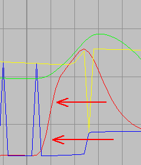

(ff2) Onset exper (f2) (F84)
Deze funktie vormt de vervanging voor funktie 2 ???.
Bepaling Bloeddruk Onset
(MID-Poly Applicatie)
Achtergrond
Bij patienten met een dwarslaesie werken bepaalde terugkoppel-elementen in de regeling van de bloeddruk niet goed of onvoldoende. Om deze regelmechanismen beter te doorgronden is de afdeling Fysiologie geïnteresseerd in de aansturing van de eigenschappen van het arteriële vaatbed. Een van de parameters die iets zegt over de status van het arteriële vaatbed is de latentietijd tussen de R-top in het ECG en de onset van de bloeddruk in de periferie. Het bepalen van de R-top levert geen probleem. Het volautomatisch bepalen van de bloeddruk
onset is echter een lastiger probleem.
Probleem
De vol-automatische bepaling van de bloeddruk onset wordt gekenmerkt door de volgende specifieke problemen:
grote laagfrekwent component
aanzienlijke hoeveelheid ruis
fenomeen is asymetrisch
bepalen nulde afgeleide is storingsgevoelig
wavelet vóór de onset is sterk variant
artefacten (b.v. bij beweging)
Principe Oplossing
Duidelijk is dat de opgaande helling van het bloeddruk signaal wel goed te bepalen is.
Omdat deze helling behoorlijk steil is, kan de onset nauwkeurig bepaald worden door de bepaling van het snijpunt van deze helling met een goed gekozen horizontale lijn ter hoogte van de diastolische druk. Weliswaar zal de echte onset iets eerder optreden doch de geïntroduceerde fout geeft slechts een constante afwijking.
Praktische Uitwerking
De helling wordt bepaald door het berekenen van een lineaire regressie, welke wordt gestart op 15% van het begin en welke door loopt tot 85% van de top. Dit bereik garandeert enerzijds dat de curve voldoende lineair is en anderzijds wordt de maximale hoeveelheid informatie benut waardoor een optimale ruisonderdrukking wordt bereikt. De diastolische druk wordt bepaald door het lokale minimum te bepalen van het gefilterde druksignaal in de periode voorafgaand aan de helling. Daarnaast worden een aantal JBF algoritmen gebruikt om resterende artefacten te onderdrukken.
Resultaat
Het algoritme, uitgevoerd in MID-Poly, werkt volautomatisch. De latentietijd wordt met een nauwkeurigheid beter dan 5 msec en in de meeste gevallen zelfs beter dan 2 msec berekend.
//store new sample
ap:=(ap+1) mod 1000;
sample_array[ap]:=input[1];
mean:=mean+sample_array[ap];
if not(initialized) then
begin
inc(meanN);
initialized:=meanN>=Ntijd_constante;
if initialized then
begin
max:=sample_array[ap];
min:=sample_array[ap];
for i:=1 to Ntijd_constante-1 do
begin
ii:=(ap -i + 1000) mod 1000;
if sample_array[ii]>max then max:=sample_array[ii];
if sample_array[ii]<min then min:=sample_array[ii];
end;
end
else exit;
end;
//verwijder het "eerste sample" van de reeks over tijdconstante
ii:=(ap - Ntijd_constante + 1000) mod 1000;
mean:=mean-sample_array[ii];
output[1]:=max;
if sample_array[ap]>max then
begin
max:=sample_array[ap];
max_follow:=true;
end
else
begin
//als bezig was maximum te volgen,
//en nu het signaal weer dalende,
//dan was dit dus een lokaal maximum
//en dus plaatsen we een marker in het maximum signaal
//en we resetten tevens het minimum
if max_follow then
begin
output[1]:=mean / Ntijd_constante;
max_follow:=false;
min:=mean / Ntijd_constante;
end;
end;
output[2]:=min;
if sample_array[ap]<min then
begin
min:=sample_array[ap];
min_follow:=true;
end
else
begin
if min_follow then
begin
output[2]:=max;
min_follow:=false;
end;
end;
output[3]:=mean / Ntijd_constante;
delta:=(max-sample_array[ap])/(2*Ntijd_constante);
max:=max-delta;
delta:=(sample_array[ap]-min)/(2*Ntijd_constante);
min:=min+delta;
end;
Uit bovenstaande figuur, blijkt

Als we het plaatje uitvergroten, dan zien we dat we het eerste stuk van de helling moeten hebben voor een betrouwbare bepaling.
Dus bv een lineaire regressie over de positieve helling, van 20% tot 50% van de amplitude.
Aangezien deze helling nog geheel in het buffer zit, is dit vrij eenvoudig op te sporen.